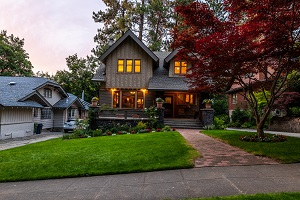
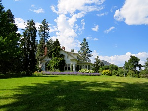
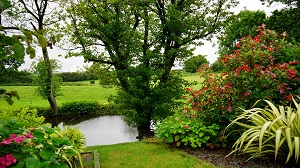
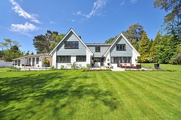
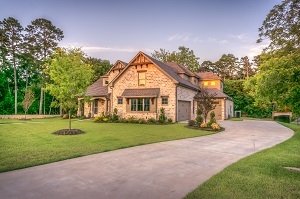

Nothing brings us more joy than happy costumers!
|  | Busy B's helped us create beautiful flower beds around our house. Would recommend to anyone! |
During the last bad wind storm our trees took a beating and we were worried that we were going to have to cut them down. But Busy B's saved them and our roof! |
 |
|  | IT IS AMAZING!!! Busy B's created a beautiful flower garden around our little fishing pond and even helped us find someone who could restock it! Couldn't be happier! |
I'm getting older and don't have any family near me, so keeping up with my lawn has become harder and harder. The Bonds are very kind people who take great care of my lawn. I could not be more grateful! |
 |
|  | My husband and I didn't know the first thing about lawn design and management when it came time to reseed our new lawn after building our house. Busy B's did a great job growing our new grass and designing our outdoor beds. They even taught us lawncare techniques! |